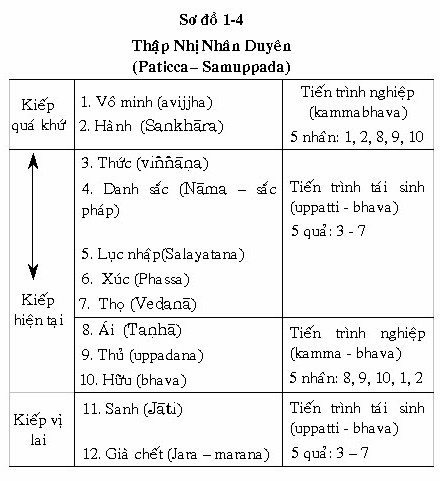
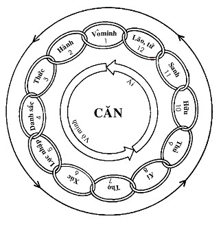
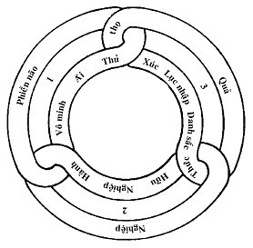
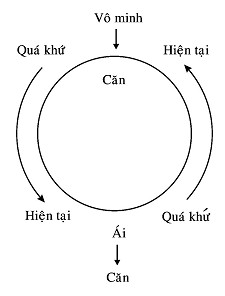

|
Giáo trình Thiền
Minh Sát Tuệ Tác giả: Thiền Sư Achaan
Naeb
1.9. SỰ KHÁC BIỆT GIỮA THIỀN CHỈ VÀ THIỀN QUÁN Có hai loại tu tập, Chỉ và Quán:
Tu tập thiền chỉ là thiện pháp và vẫn còn sinh tử luân hồi. Nó có trước thời Ðức Phật. Tu tập thiền quán là thiện pháp nhưng nó vượt khỏi Luân hồi sanh tử do đức Phật khám phá. Cảm giác khi thiền định đạt được là người ta đạt đến một hạnh phúc thường còn với bản ngã (si mê vẫn còn). Cảm giác khi Tuệ minh sát đạt được, đó là vô thường, khổ và vô ngã. 1.10. DANH PHÁP VÀ SẮC PHÁP Vạn vật trong vũ trụ đều là danh pháp và sắc pháp, hoặc 5 uẩn (Khandha). Danh pháp và sắc pháp là pháp chân đế. Sắc pháp thường được định nghĩa là vật chất, trong khi đó danh pháp được định nghĩa là tâm (tâm) và tâm sở (cetasika), và Níp bàn. Sắc pháp cũng có thể được định nghĩa là bất cứ điều gì khác hơn danh pháp, nó thay đổi bởi vì lạnh hoặc nóng. Sắc pháp là điều mà người ta được biết, danh pháp biết được (mặc dù cũng có thể biết danh pháp - nghĩa là danh pháp có thể là một đối tượng, hoặc được biết, như là "nhĩ thức" và "nhãn thức"). Trong sự tu tập, sắc pháp có thể được xem như một diễn viên, danh pháp là người xem. Trong thuật ngữ hiện đại, sắc pháp thì giống như một phần máy móc của một người máy và danh pháp thì giống máy vi tính: danh pháp ra lệnh hoặc bảo cho sắc pháp thực hiện điều gì. Danh pháp và sắc pháp là các đối tượng của sự tu tập thiền quán. Có nhiều danh pháp và sắc pháp, nhưng hành giả chỉ dùng những danh pháp và sắc pháp đó là các đối tượng của thiền quán trong khoảnh khắc hiện tại. Ba loại danh pháp có thể được sử dụng như các đối tượng thiền là thọ, tâm và pháp. Những ví dụ điển hình của thọ là thọ lạc hay thọ bất lạc; Tâm: tâm với tham, tâm với sân, tâm với si v.v...; Pháp: nhĩ thức, nhãn thức, tâm phóng túng v.v... Các loại sắc pháp dành cho thiền ở điểm chủ yếu này là: Oai nghi thân chính yếu (đi, đứng, ngồi và nằm) và các tư thế tạm thời. Các oai nghi tạm thời là các tư thế thứ yếu giúp cho việc duy trì các tư thế chính, chẳng hạn như ăn, uống v.v... (xem phần vấn đáp ở trang cuối, phụ lục A, đối với các tư thế phụ hoàn thiện). Nhân của danh pháp và sắc pháp là gì? Nhân của danh pháp và sắc pháp là phiền não - đặc biệt là vô minh (Avijjā) và tham ái (Taṇhā), là những nhân chính của tất cả khổ đau. Vô minh tồn tại bởi chúng ta không nhận thức được 5 uẩn là khổ; chúng ta nghĩ chúng là hạnh phúc (sukha). Ðây là ý niệm sai lầm(Vipallāsa). 1.11 NHỮNG ÐIỀU KIỆN LÀM LU MỜ TAM TƯỚNG Ba đặc tính luôn luôn được đề cập đến là vô thường, khổ đau và vô ngã trong danh pháp và sắc pháp. Nhưng chúng ta không dễ dàng nhận thức rõ ràng tam tướng trong thân và tâm. Tại sao? Vì chúng bị những điều kiện nào đó làm lu mờ. 1. Vô thường: Ðiều kiện làm cho người ta không thấy được chân lý vô thường (anicca) trong thân-tâm là sự liên tục (santati). Sự liên tục sanh diệt của danh và sắc tạo ra sự kiện liên tục nằm ở trong chân lý, sự hình thành của một khoảnh khắc sát na. 2. Khổ: Những gì che đậy khổ đế trong thân là không nhận biết tư thế trong thân là gì. 3. Vô ngã: Những gì che đậy chân lý vô ngã (anatta) trong thân tâm là ý niệm vững chắc- ghanasana. Làm thế nào chúng ta có thể "thấy rõ bản chất" của tam tướng này trong khi tu tập? 1) Sự liên tục (santati). Sự sinh và diệt của danh và sắc thật nhanh, người ta khó lòng nhận ra, và như vậy nó tạo ra hậu quả của một sự liên tục nhưng thực tế được cấu thành của nhiều bức tranh riêng rẽ bất động. Như vậy, danh sắc dường như là vững chắc và thường còn bởi vì chúng ta không thể thấy được chân lý của sinh và diệt [1] . Chúng ta không thể loại trừ sự hoại diệt nhanh chóng này (nó là chân lý), nhưng hành giả phải tu tập nhiệt tâm và tỉnh giác cho đến khi Tuệ minh sát xuất hiện, nó sẽ cho thấy sự riêng rẻ giữa khoảnh khắc sinh và diệt. Trí tuệ này sẽ đoạn trừ sự liên tục đã che giấu sự vô thường của danh sắc. Người ta có thấy sự vô thường trong sắc bằng trí tư, trong khi đó danh lại càng vi tế hơn, và khó nhận biết. Ví dụ, khi thay đổi từ oai nghi ngồi sang oai nghi đứng, chúng ta có thể thấy rằng oai nghi ngồi là vô thường. Cho nên hành giả với trí tuệ yếu kém nên tu tập đề mục niệm thân (Kāyamupassana Satipaṭṭhāna). 2) Không tỉnh giác với oai nghi: không tỉnh giác oai nghi thân, từ đó chúng ta không nhận biết đó là khổ (dukkha). Khổ có nghiã không có khả năng để duy trì cùng một điều kiện. (Ðây là sabhava): trạng thái thật của vạn vật. Nó là chân lý). Khi một vị trí được thay đổi có khổ thọ, ở vị trí cũ nhưng thiếu đi " khéo tác ý" trong vị trí cũ cản trở hành giả tiến triển và nhận thấy khổ thọ. Nhưng khi ba danh đang quan sát oai nghi liên tục, khéo tác ý (sự hiểu biết đúng đắn) sẽ tiến hành ngăn chặn phiền não, và ham muốn cũng như không ham muốn sẽ không xảy ra, và như vậy hành giả sẽ thấy được khổ thọ ở mọi tư thế cũ, và, kể từ đó, tư thế mới sẽ không thể còn che giấu khổ đế nữa. Ví dụ: Trong oai nghi ngồi, khi sự đau đớn xuất hiện, nếu không có "khéo tác ý", chúng ta sẽ suy nghĩ "chúng ta" khổ và không thích sẽ xuất hiện, và sau đó ba danh pháp không thể tiến hành tu tập, và điều này tạo nên không thích - domanassa: không thích tư thế cũ. Hành giả đứng dậy bởi vì vị này muốn đứng, và ham muốn xảy ra với tư thế mới. Bây giờ người ta không thể nhận ra được khổ thọ trong tư thế cũ, bởi tư thế mới che đi khổ trong tư thế cũ (đây là một ví dụ tốt về sự việc không nhận biết tư thế nào che đi sự khổ). Khổ thọ ở tư thế cũ thường rất dễ nhận ra khi hành giả đang tu tập; nhưng hành khổ - Sankhāra khổ (sự đau được mang vài tư thế mới) rất khó nhận ra - bởi vì tư thế mới thường xuất hiện là một tư thế hạnh phúc. Nếu hành giả nhận ra khổ trong tư thế mới, vị này phải có "khéo tác ý", bởi vì ái dục hoặc ham muốn thường xảy ra trong tư thế mới - và không ham muốn - domanasa xảy ra ở tư thế cũ. Ái dục thích hạnh phúc và không thích khổ; như vậy để loại trừ ái dục chỉ có 1 cách: Tuệ minh sát nhận ra khổ. Do đó, đức Phật mô tả các giai đoạn trí tuệ (tầng thánh) sẽ đoạn trừ ái dục bằng cách nhận ra khổ đế. Trong khi tu tập người ta phải nhận ra khổ đế theo 4 cách:
1) Thấy được thọ khổ ở tư thế cũ; 4) nhận ra khổ đế trong tuệ thứ 11 là tuệ Hành xã- Sankharupekkhāna - Cách sau cùng này chính là trí tuệ mạnh mẽ, và dẫn đến tuệ thứ 12 -tuệ nhận thức Tứ Diệu Ðế (Anulomañāṇa). Nếu sự tu tập không nhận thức được khổ bằng tuệ giác, đó không phải là sự tu tập đúng đắn, không phải là "Con Ðường Trung Ðạo" (nghĩa là Bát Chánh Ðạo). Chỉ có sự nhận thức được khổ mới thoát khỏi vòng sinh tử luân hồi - bởi vì sự nhận thức khổ dẫn đến việc nhàm chán (Nibbidā) trong 5 uẩn và dẫn đến sự diệt khổ. Nếu chúng ta không nhận thức được tuệ thứ 8 - Nibbidā-ñaṇa, và không thể diệt khổ. Khi có sự nhận thức bằng trí tuệ danh sắc là vô thường, khổ và vô ngã, hành giả sẽ cảm thấy nhàm chán sự khổ của danh sắc. Ðó là con đường thanh tịnh. Do đó, hành giả phải có "khéo tác ý" đúng đắn để nhận thức khổ trong tư thế mới. Vị này phải biết lý do mỗi lần thay đổi tư thế, những lợi ích nào đạt được từ sự thay đổi có "khéo tác ý" (như vậy tuệ minh sát có thể phát sinh), và hình phạt nào sẽ đến, nếu sự thay không được thực hiện (phiền não sẽ xâm nhập). Thông thường, người mới tu tập không hiểu được lý do đối với sự thay đổi tư thế. Vị này nghĩ rằng mình muốn thay đổi, nhưng thực tế khi khổ ép buộc sự thay đổi. Khi người ta hiểu được lý do đúng đắn, điều này được lặp lại liên tục, vị này sẽ thấy khổ và nhận ra rằng tư thế mới thì không tốt đẹp hơn tư thế cũ. Như vậy lòng ham muốn (abhijjhā) sẽ không xuất hiện với tư thế mới và lòng không ham thích (domanassa) sẽ không xảy ra với tư thế cũ. Và điều này sẽ dẫn đến trí tuệ cho rằng tất cả danh sắc đều không kiểm soát được, vô ngã, không có đàn ông, đàn bà - và đây là sabhava: bản chất tự nhiên của vạn vật hoặc pháp chân đế. Khi hành giả nhận thức được sabhava, và một ý tưởng ngay trong hiện tại (Saṃvega) sẽ xuất hiện, phiền não sẽ bị yếu kém đi. Sẽ có nhiều sự kiên trì hơn. Như vậy hành giả sẽ đạt trí tuệ niệm xứ và sẽ đoạn trừ lòng ham muốn và lòng không ham thích trong Ngũ Uẩn. 3) Ý niệm về thật (Ghanasaññā): Sự thật của danh và sắc là pháp chân đế paramattha-dhamma. Nhưng mặc dù nó là thật, nhưng lại dẫn chúng ta đến tà kiến cho rằng chúng ta là đàn ông, đàn bà hoặc có bản ngã. Như vậy, chúng ta nghĩ rằng danh và sắc là thường còn là hạnh phúc. Như vậy một sự thật che giấu chân lý tuyệt đối của vạn vật về danh và sắc - đó là bản ngã. Như thế hành giả phải có "khéo tác ý" để tách rời danh và sắc, như vậy chúng không có vẻ đang thực hiện chức năng là một đơn vị duy nhất. Không có "khéo tác ý" chúng ta sẽ không biết cái nào là sắc pháp và cái nào danh pháp. Cũng như các sắc đều khác biệt nhau: oai nghi ngồi khác với oai nghi đứng, đứng khác với oai nghi đi v.v... Sáu điểm minh sát rất ích lợi cho việc nhận thấy sự riêng rẽ của danh và sắc. Chúng là
1) 5 uẩn (Khandha) Ví dụ, 5 uẩn, chúng ta có thể thấy rằng sắc uẩn là oai nghi ngồi, nhưng chính thức uẩn biết được (3 sở hữu - thọ, tưởng, hành) [2] rằng sắc uẩn là đang ngồi. Như vậy, chúng ta có thể thấy rõ ràng sự riêng rẽ của danh và sắc (viññāṇa). Sự tu tập để nhận thức rõ ràng sự thật-Ghanasaññā thì giống như việc quán sát danh và sắc (người ta không có một nỗ lực đặc biệt để tách rời ra làm hai). Tuy thế, hành giả nên biết rằng danh pháp biết được "oai nghi ngồi" và ý thức được "oai nghi đứng" thì không cùng chung một danh pháp. Và thậm chí oai nghi ngồi đó thì cũng không giống oai nghi đứng. Như sự tu tập được thực hiện theo tính cách thông thường cho đến khi tà kiến được tạo ra bởi sự thật- Ghanasaññā bị tiêu diệt. Khi sự nhận thấy rõ sự liên tục đến vô thường và nhận thấy rõ các tư thế đó che giấu đi sự khổ, sự tu tập để thấy rõ sự thật - Ghanasaññā thì giống nhau; không có điều nào hơn là sự quán sát danh sắc và rõ từng phần. Sự loại bỏ ý tưởng sai lạc cho rằng sự thật - Ghanasaññā tạo nên sẽ dẫn đến tuệ thứ 1 (nāma-rūpa- parichedañāṇa) hoặc sự xác định thân tâm (đó là diṭṭhi visuddhi - tuệ giác và sự hiểu biết trong sạch). Nếu tuệ thứ nhất không đạt được, như vậy sự tiến đến các tuệ tiếp theo cũng không thể thực hiện được. Sự tu tập để nhìn thấy rõ các điều kiện (duyên) che khuất Tam Tướng; không cần phải thành công với tất cả 3 tướng. Người ta chỉ cần nhận thấy rõ 1 tướng. Ví dụ nếu hành giả thấy rõ điều gì che giấu vô thường, hành giả sẽ nhận ra khổ đau và vô ngã. 1.12. MƯỜI HAI NHÂN DUYÊN (Paticcasamuppada) 12 nhân duyên là một loạt nhân và quả, tạo thành một chuỗi liên kết 12 nhân duyên xoay tròn (nidāna) minh họa những điều kiện tạo nên sự tái sinh. Nó là quy luật tự nhiên (sabhava - dhamma), chi phối toàn bộ nhân quả của tất cả những hiện tượng, với 1 mối liên kết tạo cho cái tiếp khác xảy ra. Nó tạo nên vòng sinh tử luân hồi (samsāra - vata) và người ta không thể dừng lại được. Ðơn thuần chỉ là nhân quả, và không có một bản ngã hoặc một lực nào bên ngoài - ở thế giới này và thế giới khác. Không có một người hoặc một sức mạnh bên ngoài có thể khiến cho điều này xảy ra: sự kiện này được gọi là 12 nhân duyên, và nó là nhân và duyên trợ (paccaya). Ví dụ vô minh là nhân (1) dẫn đến (2) hành (Xem các mối liên kết, ở dưới). Sự thảo luận về nhân duyên sẽ bao hàm cái hiện hữu trong thế gian này,là con người. 12 nhân duyên diễn tiến như sau.
1. Duyên vô minh, sanh hành
[3] a) Từ Vô Minh dẫn đến già, chết chấm dứt Duyên khởi thật sự. "Buồn rầu, than khóc", v.v... là những gì tiếp theo sau, cho thấy rằng mỗi lần sinh dẫn đến khổ - Ðế thứ nhất (khổ đế). Thập nhị nhân duyên được gọi là Bhava - cakka - "bánh xe luân hồi". Lúc nào con người còn ở trong vòng luân hồi, bánh xe chẳng bao giờ được ngừng lại". b) Thuật ngữ 1. Vô minh có nghĩa là không nhận ra được Tứ Diệu Ðế. 2. Hành không phải hành của Ngũ uẩn. Hành ở đây là nghiệp được kết tập từ quá khứ dẫn đến tái sinh. Có ba loại hành: công đức (puñña), phi công đức (apuñña) và thiền vô sắc cao nhất (āneñja). 3. Thức là thức tái sanh - patisandhi-viññāṇa. 4. Danh sắc là ba sở hữu: thọ, tưởng, hành cộng với sắc nghiệp (thân do nghiệp tạo thành). 5. Lục căn (Sarayatana) là nhãn, nhĩ, tỉ, thiệt, thân, ý. 6. Xúc (Phassa) đề cập đến cetasika (tâm sở) Hướng dẫn tâm (citta) đến đối tượng của Lục căn. 7. Thọ (Vedanā) là sở hữu thọ mà biết được nếu thọ là lạc, khổ v.v... 8. Tham ái (Taṇhā) là sở hữu tham, cảm thấy ham muốn khi sáu căn hoạt động. 9. Chấp thủ (Upādāna) là sở hữu phát sanh ngoàisở hữu tham, nhưng mạnh mẽ hơn. 10. Hữu (Bhava) là kamma - bhava hoặc sự hiện hữu từ đó nghiệp xấu hay tốt được hình thành 11. Sinh (Jāti - đề cập đến 5 uẩn hoặc danh sắc). 12. Khi sanh xuất hiện, như vậy có già và chết. Ðức Thế Tôn đã trình bày thập nhị nhân duyên (để chúng ta có thể nhận ra chân lý của thực tướng Pháp, và thấy rõ rằng nó xảy ra với nhân và trợ duyên của nó. Mục đích của sự kiện này là giúp để nhận ra thức, danh sắc là vô thường, khổ não và vô ngã. (sabhava dhamma). Vô minh là chuỗi thập nhị nhân duyên, nó đứng đầu tiên, nhưng thực tế nó giống như một bánh xe hoặc một vòng tròn, không có bắt đầu hoặc kết thúc. Tuy vậy, vô minh là phần cốt yếu của sự liên kết trong dây chuyền; bởi vì vô minh là nhân chính của những điều phiền não, sự đoạn trừ vô minh bằng trí tuệ là phương pháp độc nhất để phá vỡ xiềng xích. Vô minh đến từ lậu hoặc: Lậu hoặc của tham ái; của hữu, của những quan điểm, của vô minh - nhưng tất cả bốn điều trên đều xuất phát từ vô minh: đó là sự không biết được Tứ Diệu Ðế. Một lần nọ, Ananda bạch với Ðức Phật, Thập nhị Nhân Duyên tuyệt vời và dễ hiểu biết bao. Ðức Phật đáp. "Không phải như vậy đâu". Thập nhị nhân duyên thật sâu sắc và thật khó lãnh hội. Nếu một người nào muốn nghiên cứu học hỏi Thập Nhị Nhân Duyên, tốt hơn nên có một cuốn sách đặc biệt về trí tuệ siêu phàm của Ðức Phật. Lợi ích của giáo pháp này sẽ ngăn chặn được tà kiến về bản ngã, bằng cách cho thấy rằng mọi việc xảy ra bởi vì nhân, và không có một bản ngã, một linh hồn, hoặc một thượng đế v.v... để tạo ra bất cứ điều gì. 1.12.1 Làm thế nào 12 nhân duyên và 11 duyên phá hủy tà kiến? Việc nhận thức được chân lý Duyên Khởi (Paticcasamuppada) sẽ tiêu diệt ý niệm về sự cố chấp- Vipallāsa Pháp bằng sức mạnh của trí tuệ: 1. Vô minh (avijjha): Khi người ta nhận ra vô minh là paccaya (duyên trợ) của hành nghiệp, nó tiêu diệt tà kiến cho rằng có một quyền lực cao cả hơn tạo nên vạn vật. 2. Hành (Kamma): Bởi vì người ta nhận thức rằng hành tạo nên thức tái sinh (patisandhiviññāṇa), nó đoạn trừ ảo tưởng về ngã (sakka-diṭṭhi) - bởi vì nó không phải "hành giả" được tái sinh, mà chỉ là thức tái sinh. 3. Danh và sắc (nāma-rūpa): Bởi vì thức là paccaya (duyên trợ) cho Danh và sắc (đó là tâm sở và sắc pháp), điều này thay đổi tà kiến cho rằng danh và sắc là bền vững và thường còn. 4. Lục căn: Bởi vì danh sắc là duyên trợ cho lục căn, tà kiến bị thay đổi khi chúng ta nghe và thấy. 5. Xúc: Bởi vì lục căn là duyên với xúc (phassa) và xúc được tạo nên bởi căn, trần và tâm để nhận biết (viññāṇa) là bản ngã, tà kiến bị đoạn diệt vì căn, trần và tâm. 6. Thọ: Bởi vì xúc là duyên trợ với thọ, chẳng hạn như lạc thọ v.v... tà kiến bị thay đổi bởi việc cho là "chúng ta" có hạnh phúc hoặc khổ đau. 7. Tham ái: Bởi vì thọ là duyên trợ dẫn đến kết quả tham ái- Taṇhā (được diễn tả bằng thuật ngữ của tâm sở, là sở hữu tham) tà kiến cho rằng những dục lạc ở trong bất cứ hữu- bhava nào dẫn đến hạnh phúc đều bị đoạn trừ. 8. Chấp thủ: Bởi vì ái là duyên trợ cho sự chấp thủ (upādāna) nó bao gồm sở hữu tham và sở hữu tà kiến, tà kiến cho rằng một cái gì đó hấp dẫn, xinh đẹp, mùi vị dễ chịu v.v... bị thay đổi, và như vậy không còn bị bám víu. 9. Hữu: Bởi vì upādāna (thủ) là duyên trợ cho Hữu, nó tiêu diệt tà kiến cho rằng khi người ta chết thì không còn tái sinh. (Thực tế thủ tạo nên Hữu - đó là tác ý tâm sở . Tác ý là ý muốn hoặc hành động tạo nên quả (Vipāka) - đó là Tái sinh hoặc Hữu). 10. Sinh: Bởi vì hữu (bhava) là duyên trợ cho sinh (Jāti) [4], nó tận diệt tà kiến cho rằng 5 uẩn là hạnh phúc. 11. Hoại và chết: Bởi vì sinh là duyên trợ cho hoại, tà kiến cho rằng 5 uẩn là xinh đẹp, thường còn và là của mình. 1.12.2. Những khía cạnh của duyên khởi Có bảy cách nhìn về định luật Thập Nhị Nhân Duyên: về các mối liên kết và sự liên hệ, thời gian và chu kỳ, v.v... Ở đây, chúng ta sẽ chỉ thảo luận một vài điều. 1. Phương thức hoặc tính cách (Xem sơ đồ 1-4) a) Có 20 yếu tố trong sự phân tích này. Năm nhân từ kiếp quá khứ: Vô minh (Avijjha), Hành (Sankhāra) Tham ái (Taṇhā); Chấp thủ (Upādāna). Hữu (Bhava). b) Năm quả trong hiện tại: Tâm thức (Viññāṇa), Danh sắc (Nāma - rūpa), Lục căn (Salayatana), Xúc (Phassa) Thọ (Vedanā) c) Năm nhân ở hiện tại: Ái, Thủ, Hữu, Vô minh và hành. d) Năm quả ở tương lai: Thức, Danh sắc, Lục căn, Xúc và Thọ (Ðề cập đến tái sinh, già và chết. Sơ đồ 1- 4 Lưu ý: (Xem sơ đồ 1-4) a) Trong quá khứ, có 5 nhân xác định sự hiện hữu của chúng ta (bhava). Vô minh Avijjha(1) nhân chính, tạo quả, vì chúng ta không nhận thức được pháp siêu thế (lokuttura). Do vô minh này, sống trong Hiệp thế (kokiya), chúng ta tạo nghiệp - kamma; xấu lẫn tốt, được gọi là hành (Sankhāra) (2). Ví dụ; nếu chúng ta tu tập thiền chỉ- Thiền định để đạt thiền, chúng ta ở trong hiệp thế tạo nên hành (mặc dù nó tốt), và điều này dẫn đến tham ái (8). Khi ái dục mạnh mẽ hơn, nó thay đổi đến thủ- uppadana (9): Khi chúng ta ham muốn một điều gì đó là tham ái, nhưng khi chúng ta đạt được, nó trở thành điều chấp thủ. Sự chấp thủ này dẫn đến hữu (bhava) (10). Có 2 loại hữu: nghiệp hữu - Kamma-bhava, tiến trình tích cực của hữu (kiếp quá khứ), và uppati - bhava, tiến trình tái sinh. Kamma-bhava nghiệp hiện tại là thiện hoặc bất thiện, và xác định cho tương lai. Uppati-bhava là tiến trình đem lại định mệnh của sự hữu mới (sự thành hình mới) được quyết định bởi nghiệp hữu.  Mỗi trong 5 mối liên kết (Nidāna) từ quá khứ là duyên (paccaya) cho phần kế tiếp, và rồi quả trở thành duyên cho phần kế tiếp. Hữu bao hàm sự tạo nghiệp (Kamma), bởi vì ở bất cứ hữu (bhava) chúng ta đang sống trong vòng luân hồi. Ðịnh luật của thực tướng pháp- sabhava-dhamma đó là thập nhị nhân duyên, nghĩa là khi hành giả tạo nên bất cứ nghiệp nào thì lãnh nghiệp đó - và không ai có thể tránh khỏi điều này, hoặc thay đổi kết quả. Ðây là định luật tự nhiên mang lại sự công bằng. b) Năm quả này từ kiếp trước trong hiện tại tiêu biểu những phẩm chất khi chúng sinh ra được làm người. c) Năm nhân trong hiện tại. Nhân thứ năm trong hiện tại (thọ) dẫn đến nhân thứ nhất trong hiện tại (tham ái) rồi dẫn đến (chấp thủ), bhava (hữu), và sau đó đến vô minh và hành nghiệp (8, 9, 10, 12). Bhava ở đây là upatti - bhava (tiến trình tái sinh), xác định một kiếp sống mới. Hữu này dẫn đến vô minh, bởi vì chúng sanh không nhận ra được Tứ Diệu Ðế. Sự kiện này tạo nên nghiệp (xấu và tốt) trở lại, rồi trở thành hành động. Trong nhóm này, hành là khi hành giả đang thực hiện những hành động Kusala (thiện) hoặc akusala (bất thiện). Bhava (hữu), trong nhóm này, có nghĩa là (nghiệp) Kamma đã được chấm dứt. d) Năm quả trong tương lai. Hành là duyên cho thức tái sinh (patisandhi - viññāṇa) Bốn phần kế tiếp là danh sắc trong kiếp hiện tại. Năm phần này tạo nên một tổng hợp của 20 phương thức. Hai mươi phương thức này giống như một bánh xe, nó không có sự khởi đầu hoặc kết thúc. Nhưng đức Phật biết rằng nhân chính là avijjha (vô minh).
Sơ đồ 1-5  2. Ba sự liên kết (Xem sơ đồ 1-6) Ở khía cạnh này, chúng ta nhìn vào Nidāna (mối liên kết) bằng thuật ngữ của ba sự liên kết:
a) Vòng phiền não (Kilesa) a) Vòng Phiền não đề cập đến:
Vô minh (Avijjha) (1) b) Vòng Nghiệp đề cập đến:
Hữu (Bhava) (10) c) Vòng Quả đề cập đến:
Thức (Viññāṇa) (3)
Sơ đồ 1-6  3. Hai nhân của hành động (Sơ đồ 1-4, 1-5) Ðể hiểu được thập nhị nhân duyên, điều quan trọng nhất là người ta phải biết rằng có hai nhân đưa đến hành động, vô minh và tham ái. Vô minh (avijjha) là nhân chính dẫn đến Taṇhā (tham ái), và tham ái là nhân chính cho vô minh. Vô minh là quá khứ và tham ái là hiện tại, nhưng cuối cùng chúng là các nhân với nhau - và vòng tròn có thể đi bằng 2 cách.(vẽ hình) Sơ đồ 1-7  Nhân đầu tiên (mối liên kết) dẫn đến thọ, mối liên kết thứ 7. Sau đó nó dẫn đến tham ái (mối liên kết thứ 8 -), sau đó đến (9) thủ đến (10) hữu, đến (11) sanh và sau đó (12) già chết. Người tà kiến cho rằng không có nhân và quả; không có công đức (punna), không có xấu xa (papa) và không có tái sinh. Cho nên đức Phật cho rằng vô minh là nhân chính, để cho thấy có nhân (avijjha) và quả. Quả hiện tại là (3) thức tái sanh dẫn đến (4) danh sắc (5) lục nhập (6) xúc (7) thọ. Những mối liên kết này (3 - 7) trong hiện tại được tạo nên bởi vô minh (nhân) trong quá khứ và hành (1 & 2). Cho đến khi một người vẫn còn vô minh, sẽ có một quả. Tham ái (8) được tạo ra bởi duyên của nó, thọ (7) dẫn đến thủ(9) và hữu (10). Rồi sau đó vòng tròn này quay trở lại vô minh (1) và hành (2). Năm phần này (8, 9, 10, 1, 2) là những nhân hiện tại và quả của (1) vô minh. Quả của vô minh (1) và hành(2) là để lập lại 3 - 7 (kiếp hiện tại) nữa. Khi (8) tham ái được đạt đến 8, 9, 10, 1, 2 trở thành nhân trở lại trong hiện tại. Và như vậy bánh xe quay vòng tròn. Mỗi khi một người được tái sinh (11) 3 - 7 bắt đầu và sự kiện này dẫn đến (12) già và chết. Nhìn thấy quả của tham ái, người có tà kiến cho rằng vạn vật thì thường còn, không có già hoặc đổi thay, hoặc một người với (raga-carita) tham sống mạnh mẽ có thể thấy rằng danh sắc dẫn đến già và chết. Trong vòng sinh và tử, chúng ta liên tục tái sinh trong ba cõi (loka) (kama - loka (dục giới); rūpa loka (sắc giới) và arūpa loka (vô sắc giới) - hoặc 31 cõi). Ðể thoát khỏi điều này, chúng ta phải tu tập Tứ niệm xứ, theo những nguyên tắc được đặt ra trong kinh Maha-Satipaṭṭhāna (Ðại niệm xứ), là yếu tố đầu tiên của 37 pháp trợ Bồ đề - Bodhipakkiyadhamma - và dẫn đến sự nhận thức được Tứ Diệu Ðế.
-ooOoo- [1] Lẽ dĩ nhiên, sự sanh và diệt của danh và sắc thì nhanh hơn một cảnh trong một phim - gấp hàng ngàn lần. [2] Ở đây, thọ, tưởng, hành (thông thường 5 uẩn) đang thực hiện chức năng sở hữu, nó đi đến việc tạo nên thức uẩn. [3] Có 3 loại nghiệp hành có thể xác định phạm vi của chúng ta: công đức hành, phi công đức hành, an tịnh hành (4 thiền vô sắc) [4] Có bốn hình thức yoni (tái sanh): 1) thai sanh, 2) noãn sanh, 3) thấp sanh, 4) hóa sanh -ooOoo- Ðầu trang | Mục lục | 1.1 | 1.2 | 1.3 | 1.4 | 2.1 | 2.2 | 3.0 | 4.1 | 4.2 | 4.3 | 5.0 |
Chân thành cám ơn Tỳ kheo Thiện Minh đã gửi tặng bản vi tính (Bình Anson, 07-2003).
[Trở về
trang Thư Mục]
last updated: 28-08-2003